DSLR PENTAX *ist DS2
지난 6일 현충일에 선유도에 출사를 잠깐 다녀왔습니다. 이것 저것 많이 배우기도 했고, 사진도 많이 찍었지만… 막상 집에 와서 보니 마음에 드는 사진이 하나도 없었습니다. 하지만, 이것도 제 사진이기에 … 간단하게 몇장을 기록으로 남깁니다.
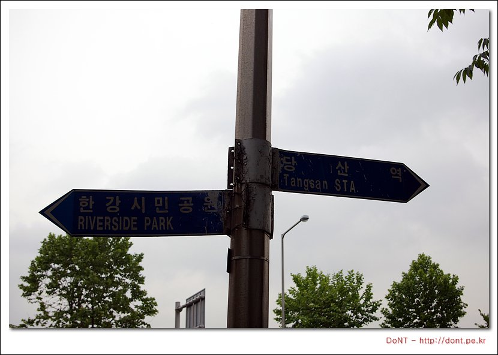
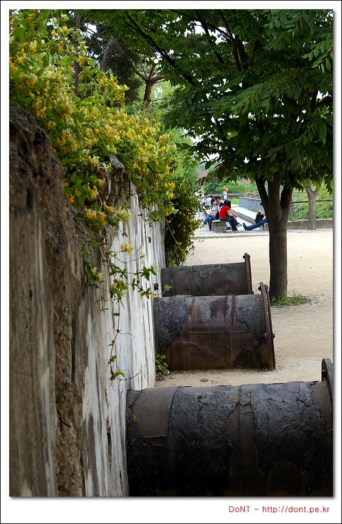
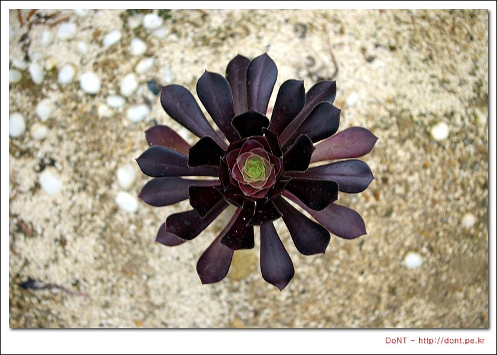
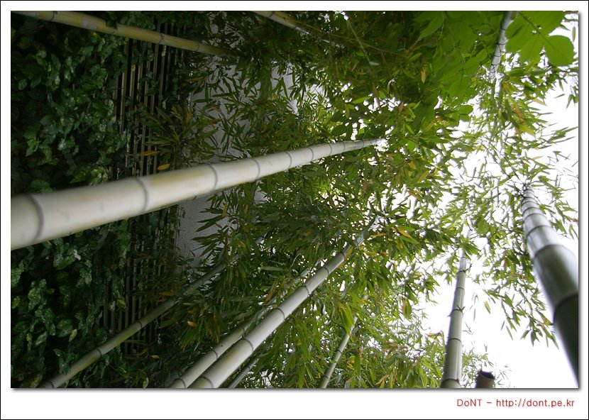
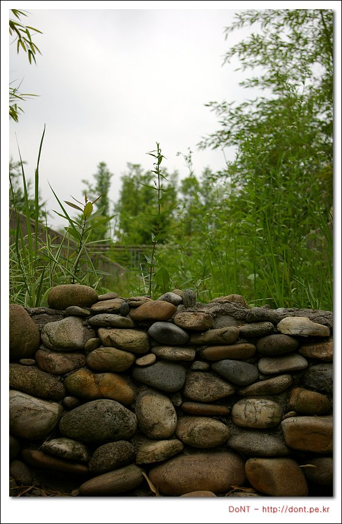
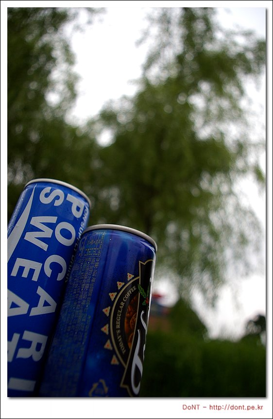
지난 6일 현충일에 선유도에 출사를 잠깐 다녀왔습니다. 이것 저것 많이 배우기도 했고, 사진도 많이 찍었지만… 막상 집에 와서 보니 마음에 드는 사진이 하나도 없었습니다. 하지만, 이것도 제 사진이기에 … 간단하게 몇장을 기록으로 남깁니다.
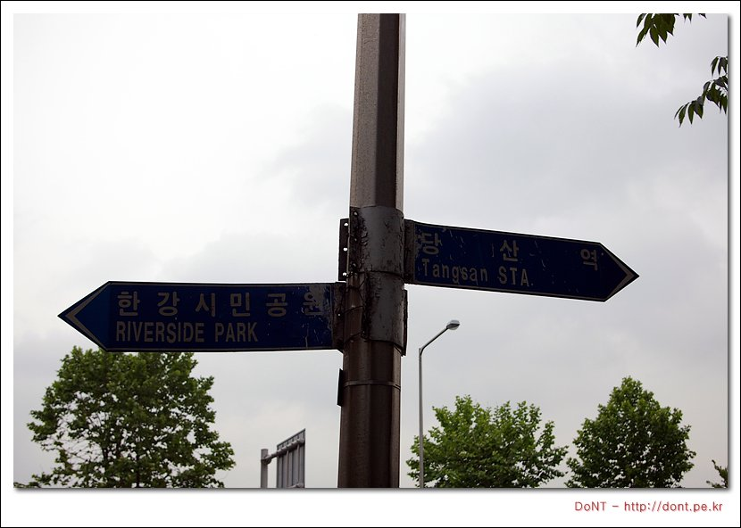
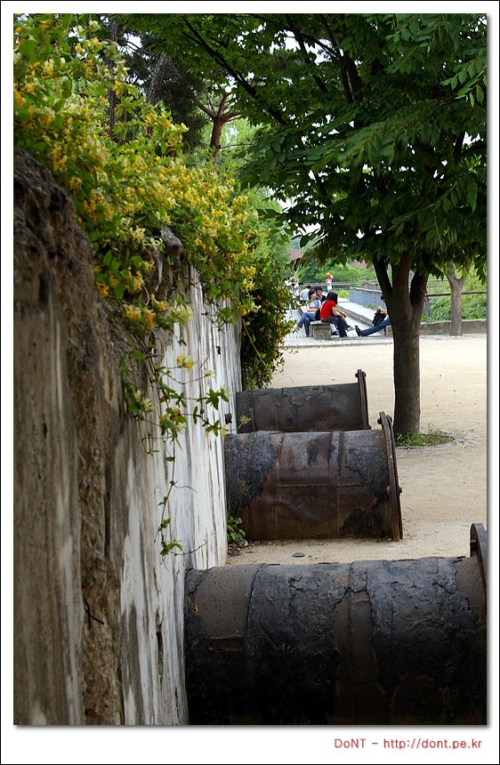
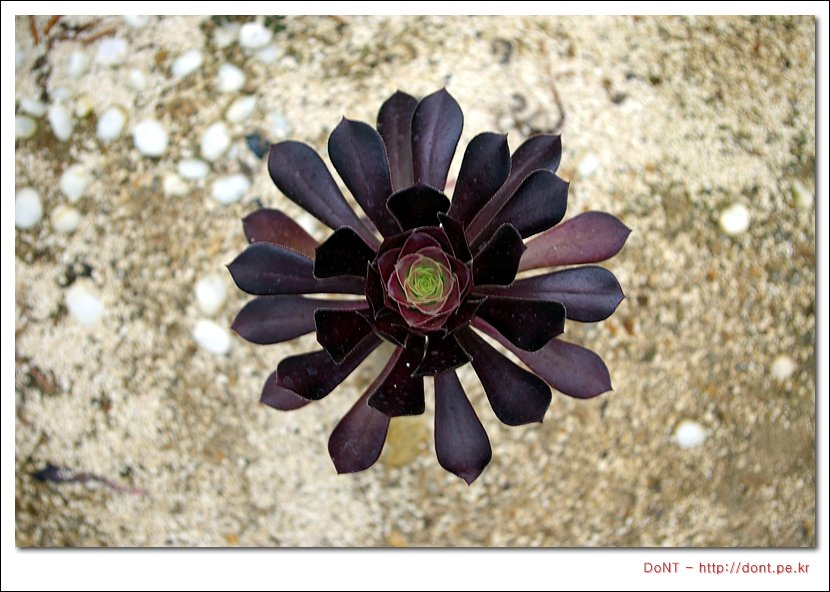
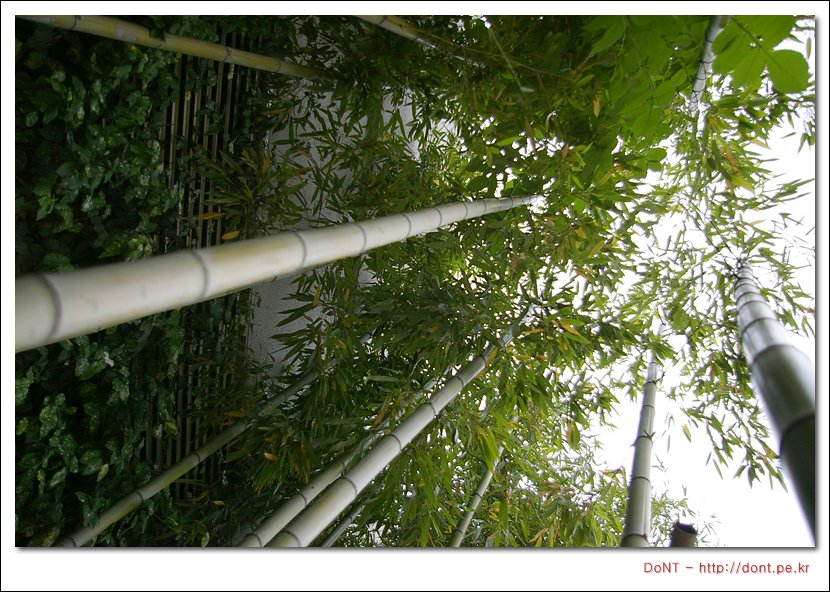
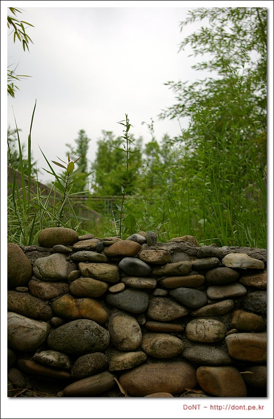
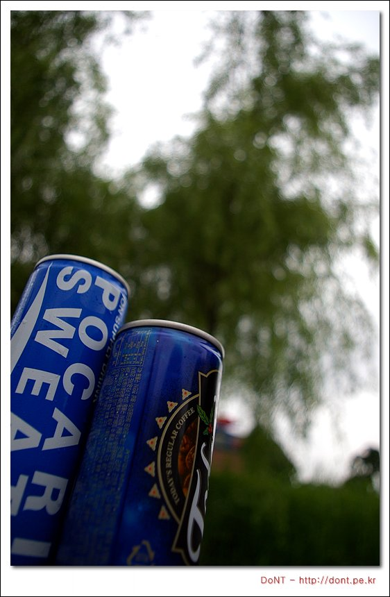